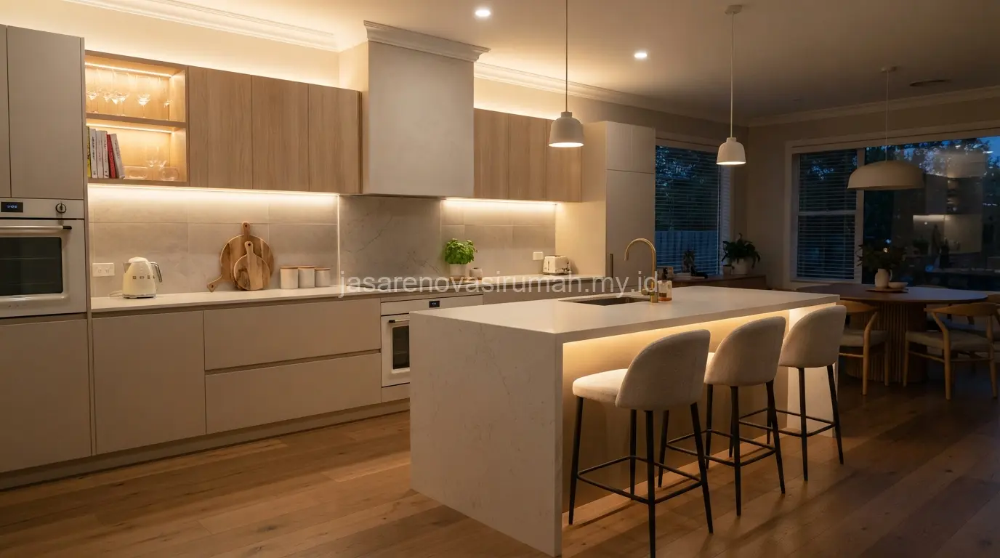

Desain interior kitchen set minimalis untuk dapur sempit mengandalkan tata letak L-shape atau linear, warna netral, dan penyimpanan vertikal agar ruang gerak tetap lega meski area dapur terbatas.
Kombinasi material tahan air, pencahayaan tersembunyi di bawah kabinet atas, serta pemilihan warna terang menjadi kunci utama agar dapur kecil tetap terasa bersih dan fungsional untuk aktivitas memasak harian.
Apa Saja Model Kitchen Set yang Cocok untuk Dapur Sempit?
Model L-shape dan linear satu sisi adalah pilihan paling efisien untuk dapur berukuran kecil karena tidak memakan banyak ruang gerak.
Kitchen set L-shape memanfaatkan dua sisi dinding yang saling tegak lurus, sehingga area memasak dan mencuci bisa dipisah namun tetap dalam jangkauan yang dekat.
Sementara model linear satu sisi cocok untuk dapur memanjang atau dapur yang menyatu dengan ruang keluarga, karena tidak menghalangi jalur sirkulasi.
Beberapa model yang umum diterapkan pada dapur sempit:
- Kitchen set L-shape dengan kabinet atas dan bawah menyatu di sudut ruangan.
- Kitchen set linear tanpa island, cocok untuk dapur di bawah 6 meter persegi.
- Kitchen set dengan meja lipat sebagai island portabel untuk dapur yang lebih fleksibel.
Material Apa yang Direkomendasikan agar Kitchen Set Tahan Lama?
Material HPL (High Pressure Laminate) dan multipleks lapis duco adalah pilihan populer karena tahan air, mudah dibersihkan, dan relatif terjangkau dibanding material solid.
Untuk area top table atau meja dapur, granit dan solid surface lebih disarankan dibanding kayu solid karena lebih tahan terhadap panas dan noda dari aktivitas memasak.
Pemilihan material sebaiknya juga mempertimbangkan kelembapan ruangan, terutama untuk dapur yang berdekatan dengan area cuci piring.
| Bagian Kitchen Set | Material Direkomendasikan | Karakteristik | Estimasi Perawatan |
|---|---|---|---|
| Badan kabinet | Multipleks lapis HPL | Tahan air, ringan, ekonomis | Lap rutin, minim perawatan khusus |
| Top table | Granit, solid surface | Tahan panas dan noda | Dipoles berkala |
| Pintu kabinet | Duco finishing | Tampilan halus, warna solid | Hindari benturan keras |
| Handle & aksesori | Stainless steel | Anti karat, awet | Lap dengan kain kering |
Bagaimana Memaksimalkan Penyimpanan Tanpa Membuat Dapur Terasa Sesak?
Penyimpanan vertikal hingga langit-langit dan penggunaan rak tarik adalah cara paling efektif menambah kapasitas simpan tanpa memperluas area lantai dapur.
Beberapa strategi penyimpanan yang bisa diterapkan pada dapur sempit:
- Kabinet atas dibuat hingga menyentuh plafon untuk memaksimalkan ruang vertikal.
- Rak tarik (pull-out) di bagian bawah memudahkan akses tanpa perlu membungkuk penuh.
- Rak sudut berputar (corner carousel) memanfaatkan sudut mati yang biasanya terbuang.
- Backsplash dengan rel gantung untuk peralatan masak yang sering dipakai.
Konsep serupa juga bisa diterapkan pada area lain di rumah yang mengusung gaya sejenis. Jika Anda sedang merencanakan dapur sebagai bagian dari rumah baru, referensi desain rumah minimalis modern bisa membantu menyelaraskan gaya dapur dengan konsep rumah secara keseluruhan.
Baca Juga: Syarat Urus IMB Rumah Tinggal Terbaru 2026
10 Inspirasi Konsep Kitchen Set Minimalis
Berikut ragam konsep yang bisa disesuaikan dengan ukuran dan kebutuhan dapur Anda:

- Kitchen set L-shape putih dengan handle tersembunyi.
- Kitchen set linear kayu terang bergaya Jepang.
- Kitchen set dua warna (dua-tone) abu dan kayu.
- Kitchen set dengan open shelf untuk tampilan lebih ringan.
- Kitchen set gaya industrial dengan aksen besi hitam.
- Kitchen set dengan backsplash keramik motif garis.
- Kitchen set minimalis hitam doff untuk kesan modern.
- Kitchen set dengan island mini sebagai meja makan.
- Kitchen set dengan lampu gantung sebagai aksen dapur terbuka.
- Kitchen set custom dengan rak kaca untuk pajangan peralatan.
Setiap konsep tersebut sebaiknya disesuaikan lagi dengan ukuran ruangan dan anggaran, karena kerumitan desain dan pemilihan material akan memengaruhi biaya pengerjaan secara langsung.
Pemilik rumah yang belum mengurus dokumen bangunan juga perlu memastikan legalitas rumah lebih dulu, misalnya lewat panduan syarat urus IMB rumah tinggal, sebelum masuk ke tahap renovasi interior seperti kitchen set.
Kesalahan Umum Saat Mendesain Kitchen Set Dapur Sempit
Kesalahan paling sering adalah memilih terlalu banyak warna dan motif sehingga dapur kecil justru terasa penuh dan tidak rapi secara visual.
Kesalahan lain yang perlu dihindari:
- Tidak memperhitungkan jarak aman antara kompor dan area penyimpanan bahan mudah terbakar.
- Mengabaikan sirkulasi udara sehingga dapur cepat lembap dan berbau.
- Memilih material murah tanpa lapisan anti air pada area yang sering terkena percikan.
Pada akhirnya, desain kitchen set minimalis yang baik memprioritaskan efisiensi ruang, kemudahan perawatan, dan konsistensi warna agar dapur sempit tetap terasa lapang.
Untuk hasil yang lebih presisi sesuai ukuran ruangan, konsultasikan kebutuhan Anda dengan jasa desain interior terbaik dan lihat referensi tambahan pada portofolio interior kami sebelum menentukan desain final.